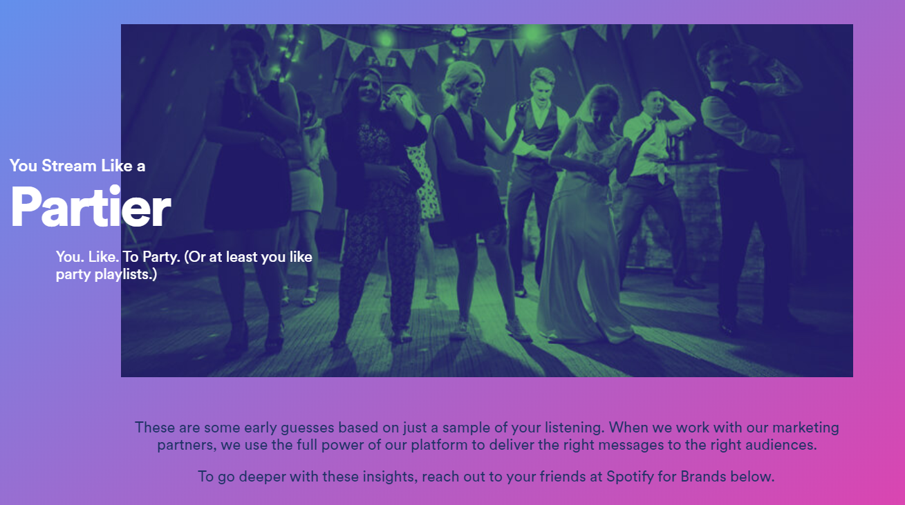
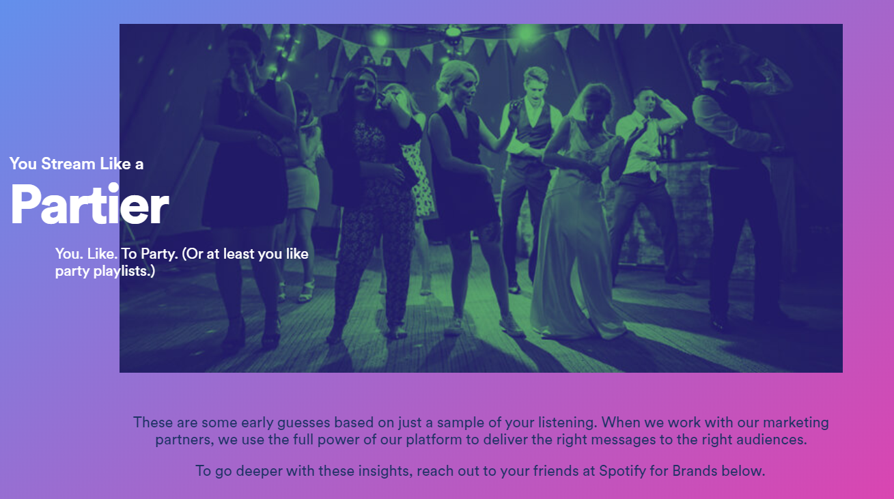

Data Spotify Collects
Spotify uses this information to personalize ads
Spotify allows advertisers to target specific people using standard information such as:
- Age
- Gender
- Platform (desktop, mobile Android, mobile iOS)
In addition, Spotify has unique categorizes such as :
- Genre
- Playlist
- Fan
Genre allows advertisers to choose a target audience based off of the genre of music they are listening to before the ad plays
Playlist allows advertisers to choose a target audience based off of the playlist they listened to immediatly before they heard the ad
Fan allows advertisers to choose a target audience based off of


Categorizing Music
How Spotify organizes the music you listen to
As a Spotify user, you can look at all of the data about what you listen to here
When you login through the link, it shows you information such as your top artists, top songs, hours listened, and much more.
 
